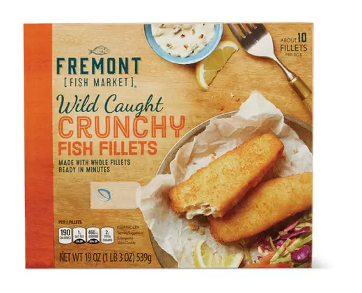

Tom's Famous Fish and Chips Recipe

This is a recipe made famous as a late night dinner, quick and easy!
Ingreditents:
Steps:
- Microwave the Fish and the Chips. Total time will depend on microwave, 5 minutes for a 1100w inverter microwave when cooking from frozen
- Put food onto a sandwich press and press till toasted
- Garnish with salt and the juice of a lemon or lemon juice from a bottle